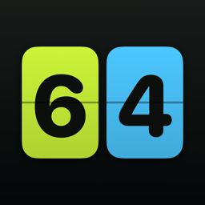

Pointo
Score keeper for padel, tennis and pickleball — iPhone and Apple Watch.
Need help?
Write to us and we'll get back to you, usually within a couple of days. If something went wrong in a match, tell us the sport, the format and what the score showed.
racketscore.dreffka@gmail.comQuestions
How do I keep score from my Apple Watch?
Open Pointo on the watch. If a match is running on your iPhone, the watch shows it and every tap scores it on the phone. Otherwise pick the format from your iPhone or one of the standard formats to start a match on the watch.
What is a shared match?
A match that stays in sync on several phones over the internet. One player starts it (Pointo Pro) and the others join with the 6-letter code or the shared link — joining is free. You can let anyone score, or pick one scorekeeper.
What is Star Point in padel?
The deciding-point rule introduced by FIP: at the third deuce of a game the next point wins it. Pointo also supports classic advantage and golden point.
How do I score with Siri or the Action Button?
With Pointo Pro, say “Point for team A in Pointo”, or assign the “Point Team A” shortcut to the Action Button in Settings → Action Button → Shortcut.
How do I restore or cancel Pointo Pro?
Restore: Settings (gear on the home screen) → Restore purchases. Cancel a subscription: iPhone Settings → your name → Subscriptions → Pointo.